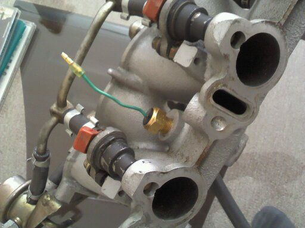

-
Finally got it wired up and running yesterday. I didn't even have to remove the front bumper cover. I only had to remove the upper radiator hose.
Seems to blow alot of air. It's a perfect fit on the radiator core and a little slimmer than the Taurus fan that I had previously. I used some silicone vacuum hose split lengthwise to go around the edge of the fan housing where it touches the radiator.
Now I need to take it on a test drive after I reinstall the air filter heat shield after a few modifications that I had to do to it.Shiro #443

-
Rick has inspired me to grab the Cougar fan from RockAuto. I'm pretty new to electrical diagrams, and wiring things in. I've been looking at different forums/threads for a safe but affordable way to wire in two fans. I'd like to just run 1 speed fans, once the coolant hits 170 degrees. I've found this diagram
In my case, the car is already setup with a manual cabin toggle switch, and I think it's a good idea to keep that available just in case! This setup uses two realays in-line with eachother to prevent too much hitting a single relay and burning it up. My car has a single relay, running TWO FANS lol, but again, I don't want to burn anything up, so for the few dollars extra, I think the redundancy is worth it.
I read MikeG's write-up on Xenon as well. Are you guys using any type of alternative to the hayden fan switch? I don't want to go the thermo-probe method, I'd like to have the sensor touching coolant directly, like at the LIM or something." I spend another hour trying to rip the bolt out of the subframe, pausing every five minutes to scream and contemplate how I get myself into these situations. Two cars over, a guy urinates. I watch the steam waft off of the fresh puddle in the gravel. It merges with the blowing snow and is cut by the aerodynamic wedge of a nearby Fiero. Beautiful. Another pry and the carrier finally falls to earth. I walk out of there $80 lighter, which makes me more mad." - Brian Kolar -
Derale has pretty robust units from what I see. They also have kits with thread in probes that with a adaptor can be made to thread into the LIM.http://z31performance.com/showthread…2-2-(-now-NA2T
My build thread (: -
I'm running a hayden fan switch with thermo probe. While I agree at times there's concerns where the fan won't turn on and it starts to overheat that something a sensor touching the coolant would be best, but it doesn't happen often enough for me to worry about it. I have a manually switch in cabin too just in case. I would just cut one of the radiator hoses and put a connecting piece with temperature sensor in it. Believe you would cut the top one vs. bottom, correct?
Edit: like the derale products as mentioned above vs. my idea after looking into it. Cheap and easy. Might do that now myself.Usual Z31 suspect: Garage Queen (aka broken)

-
Top. NissanEgg put a probe at the bottom of his radiator and the fans never turned on while the car was overheating, I'm assuming the same result would occur if the sensor was in the lower rad hose. I'm going to try to run the 1.6L Sentra thermoswitch, in the LIM, with two relays. This will kick the fans on at 180 degrees (after thermostat has opened), and keep me from using a fan controller." I spend another hour trying to rip the bolt out of the subframe, pausing every five minutes to scream and contemplate how I get myself into these situations. Two cars over, a guy urinates. I watch the steam waft off of the fresh puddle in the gravel. It merges with the blowing snow and is cut by the aerodynamic wedge of a nearby Fiero. Beautiful. Another pry and the carrier finally falls to earth. I walk out of there $80 lighter, which makes me more mad." - Brian Kolar -
You def want the fans to come on about 10 degrees after the thermostat has completely open. (200 degrees if you have a 180 thermostat ) to prevent premature wear of the thermostathttp://z31performance.com/showthread…2-2-(-now-NA2T
My build thread (: -
Here is the information that is missing from most posts!
Location the car is mostly driven?
Radiator? N/a, turbo or aftermarket?
Condenser on or off the car?
A/C running or off?
Aftermarket front mount engine oil cooler. Yes or no?
Front mount intercooler. Yes or no?Black 1986 300zx Turbo coupe (Chuki)
http://z31performance.com/showthread…86-Turbo-Coupe
----------------------------------------------------------------------------------------------------------------
Pewter 1986 300zx N/A 2 Turbo 2+2 (Chuki)
http://z31performance.com/showthread…9;s-1986-300zx -
Michigan. Lots of winter, but always road construction during the summer. Also, the roads here mid-evil.
3-Row Champion aluminum rad
Condensor is on still, I was hoping to retain that as it's something to catch rocks/cats/debris from hitting the expensive rad
A/C is removed (except the condensor)
No oil cooler
No intercooler. Yet." I spend another hour trying to rip the bolt out of the subframe, pausing every five minutes to scream and contemplate how I get myself into these situations. Two cars over, a guy urinates. I watch the steam waft off of the fresh puddle in the gravel. It merges with the blowing snow and is cut by the aerodynamic wedge of a nearby Fiero. Beautiful. Another pry and the carrier finally falls to earth. I walk out of there $80 lighter, which makes me more mad." - Brian Kolar -
Side topic. Are you able to use the front fan thermostat in bottom left of radiator and replace it with a 180 delrin sensor or will that cause issues with cooling due to location.Usual Z31 suspect: Garage Queen (aka broken)
-
That's not a good spot for a fan trigger sensor, needs to be closer to the top hose, and more centered to be effective.Damn dirty angels....these cars!
Current Daily Driver - 86 Turbo.
Under the cover - THE BANANA… that needs to be re-energized.
sigpic -
I"ll play the devil's advocate.
I agree the location isn't the best, but it might work if you realize that as a rule of thumb your radiator should drop 20 degrees from the inlet at the top to the outlet at the bottom.
This means that you need to lower your temp sender by 20 degrees from what you want it to come on at. If you want it to come on at 180 degrees you need a 160 degree switch.
Again I've never used this setup.
I have a 3 row radiator fully blocked off be an intercooler and a 160 degree t-stat.
Mine has the sender spliced into the lower radiator hose triggering at:
150 low on
140 low off
160 hi on
145 hi off
This setup seems to be working on a daily driver that makes a 80+ mile round trip to work here in Western Oregon .
This ran about 155 on the lower radiator hose today on the ride home in 85 degree weather.Life's short
Go fast
Have a blast
Leave a good looking corpse -
So back to the thread in probes from derale. Could someone confirm what the temp probe is for on the passage side of LIM with the male connector on it and also the larger sensor on the front drivers side does. Want to see which one I can remove to thread in a fan switch sensor. I use to know what these were for, but seems I've forgotten and can't find any info via part diagrams (if they are 100% needed or not)Usual Z31 suspect: Garage Queen (aka broken)
-
Talking about this sensor on drivers side. Anyone know what it's used for and what thread it is?
Usual Z31 suspect: Garage Queen (aka broken)
-
Just realized this is the water temp sensor for the gauge, correct? What is the other one on the passenger side then?Usual Z31 suspect: Garage Queen (aka broken)
-
Sorry, can't edit posts via mobile…or is this the coolant gauge sensor?
Usual Z31 suspect: Garage Queen (aka broken)

Copyright © 2006–. All rights reserved. Privacy Policy